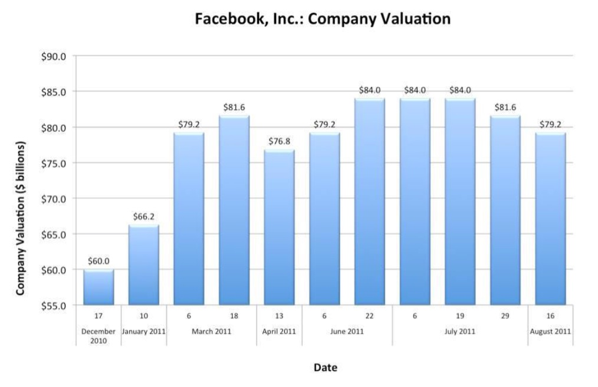

12. Data Ethics and Bias¶
12.1. Hello World Discussion¶
12.1.1. Power¶
What is an algorithm?
Are algorithms given authority?
Are algorithms used without knowing how they work?
What does the middle ground look like between black box algorithms and having non at all?
Do we have agency when using algorithms?
Examples:
GPS
Budgeting tool
Stanislav Petrov
Clinical versus Statistical Prediction
12.1.2. Data¶
What are some long-term impacts of collecting personal data?
Where is Eric Schmidt’s “imaginary creepy line”?
How can data be monetized?
What are some benefits of personalized big data?
What are some detriments of personalized big data?
Why are Mozilla Firefox and Google Chrome browsers free?
Do we have data-collection agency?
Examples:
Tesco
Target
Data brokers
Cambridge Analytica
Facebook manipulating mood
China’s Social Credit System
12.2. Lies, Damned Lies, and Statistics¶
“If you can’t prove what you want to prove, demonstrate something else and pretend they are the same thing. In the daze that follows the collision of statistics with the human mind, hardly anyone will notice the difference.” – Darrell Huff, How to Lie with Statistics, 1954
Since the dawn of statistics in the 17th century statistics have been used used to guide and mislead. Here we’ll discuss a few of the ways issues can arise when working with datasets.
Garbage In, Garbage Out
No amount of statistical work can make up for unreliable or missing data.
Don’t assume data independence.
Tests are Imperfect
False negatives
False positives
Pictures Can Be Deceiving
Examples via Finding Examples of Misleading and Deceptive Graphs

Cum Hoc Ergo Propter Hoc
Correlation is when two variables move via some relationship
Positive correlation when they move in the same direction
Negative correlation when they move in opposite directions
Zero correlation, there is no relationship
Statistical Measures Don’t Tell the Whole Story
Look at the raw data
Data reduction (be wary of extrapolation)
Sampling Bias
Non-response bias
Convenience or accidental sampling
Context Matters
Statistics must be thought of in the wider context